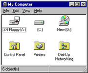

Website Downloads
Useful Resources from the Web
Each course and its modules are offered to you using advanced e-learning technologies. These have now become available to us through the advancements made in multimedia, software and the general availability of the Internet.
We have made a study of what may be helpful to you in your learning process. We have selected Web pages, self-assessment tests and free software to be accessible to you. Since you may not have fast Internet access yet, we have down-loaded all you need onto a CD.
A Definition
Download: to copy or move programmes or information into a computer’s memory, especially from the Internet or a larger computer
In this case this memoryù is the space available on a CD-ROM. CD’s are everywhere these days. Depending on the format, a huge amount of information such as music, data or computer software can be put on a CD. (We at Calvary usually work with text files, free software programmes and, occasionally, short video clips.) The CD has become the standard medium for distributing large quantities of reliable information in a compact package.
How you can Get to It
 The resources have been placed in folders on the CD. The software is under the folder labelled as Softwareù. Under this will be several sub-folders each labelled according its contents or the kind of software contained in it. All the software is freeware. This means you do not need to pay for it. Programmes are without advertising nags.
The resources have been placed in folders on the CD. The software is under the folder labelled as Softwareù. Under this will be several sub-folders each labelled according its contents or the kind of software contained in it. All the software is freeware. This means you do not need to pay for it. Programmes are without advertising nags.
The Module you are working on may have suitable Web pages related to it. To find these, turn to the following programme:
Windows Explorer
This is the programme you will use if you operate your computer on Windows. It opens a window that displays all the items present on your computer such as the different hard drives and the CD drive on which you will run this CD. Click on the CD drive and then Exploreù until you get to the resources folder of the module.
The following components can be reached in this way:
- The Study Guide and Textbook are also in Pdf -format on the CD
- You are given Study Support through a host of prepared documents
- A vast amount of support through Web links leading to academic web sites
- Free software for just about every need of a student (see page 19 & 20 for a description)
- Pages of three Websites: CLT, Calvary and CQA
- Downloaded Website pages on various skills, ministry and theological topics
- Self assessment software
The Technical Side
A CD can store up to 74 minutes of music, so the total amount of digital data that must be stored on a CD is: 783,216,000 bytes. To fit as many as 783 megabytes (MB) onto a disc only 12 cm in diameter requires that the individual bytes be very small. By examining the physical construction of a CD, you can begin to understand just how small these bytes are.
A CD is a fairly simple piece of plastic, about 1.2 mm thick. Most of a CD consists of an injection-moulded piece of clear polycarbonate plastic. During manufacturing, this plastic is impressed with microscopic bumps arranged as a single, continuous, extremely long spiral track of data. Once the clear piece of polycarbonate is formed, a thin, reflective aluminium layer is sputtered onto the disc, covering the bumps. Then a thin acrylic layer is sprayed over the aluminium to protect it. The label is then printed onto the acrylic. A cross section of a complete CD (not to scale) can be seen on the Website
at the bottom of this page: www.clt.org.za/resource_downloads.html